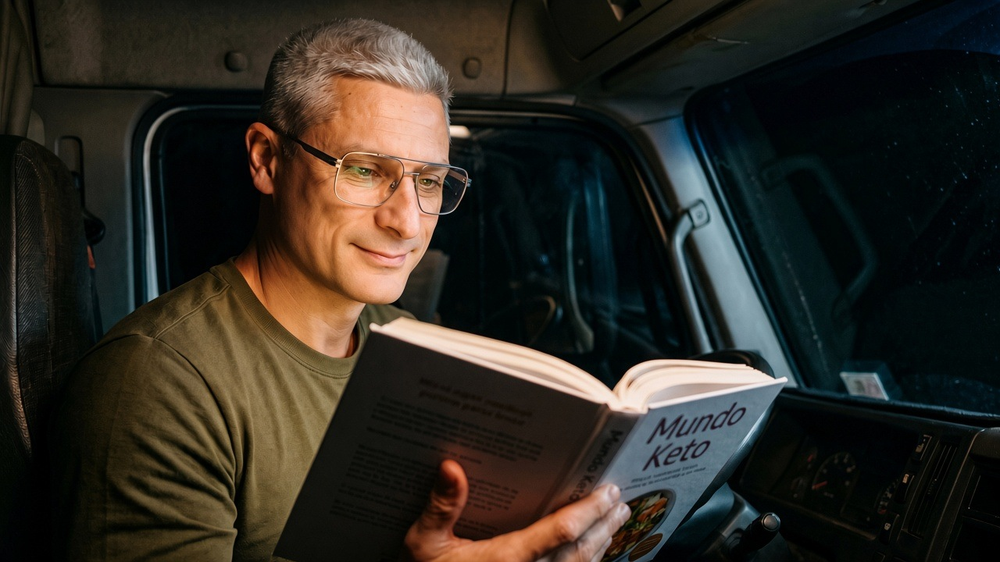
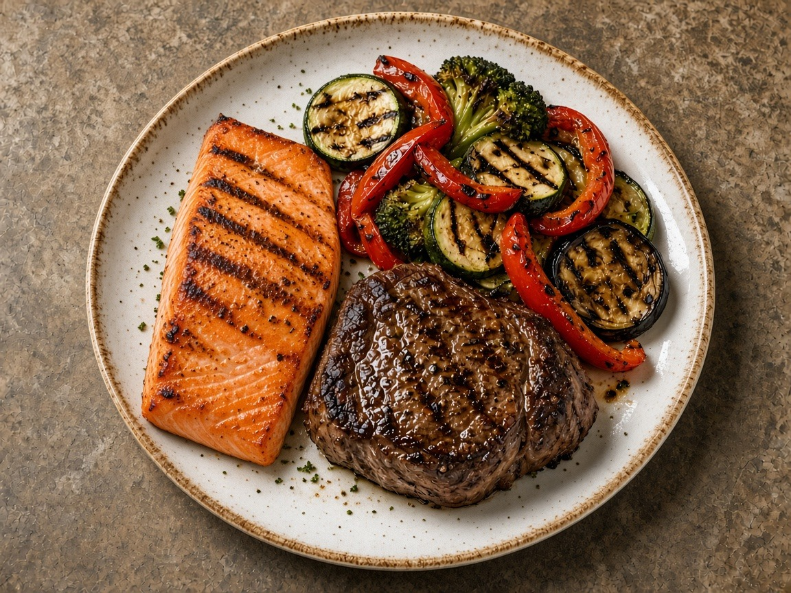

Mundo Keto
Cómo empecé en Mundo Keto
Soy camionero. Durante mucho tiempo comía como casi todos: lo que pillaba, cuando podía, y bastante.
Cuanta más comida comía, más cansado me sentía.
Empecé a ayunar sin saberlo
Por la noche me gusta leer. Sin darme cuenta, empecé a dejar de comer más horas. Cenaba antes, o no cenaba, para estar más despejado leyendo.
Me sentía más ligero, con la cabeza más clara. Ya estaba haciendo ayuno, pero no conocía las pautas.

El chico que me hizo preguntar
Vi a un chico con un cuerpo sano y le pregunté: «Oye, ¿cómo lo has conseguido?». Me dijo que seguía a Phil Hugo.
Eso me motivó a aprender las pautas de keto y ayuno. Vídeos suyos:
- Problemas al ayunar: fatiga, mareos y más
- 5 señales de que tu ayuno no funciona
- La dieta keto que ya NO recomiendo (después de 14 años)
- Canal de Phil Hugo: youtube.com/@PhilHugo
Qué como ahora en el camión
En ruta como hígado de ternera, corazones de pollo y otros órganos, pescado y verduras. Fruta no como.

Abro este blog porque sé lo que es comer mal al volante y sentirte agotado. Si a mí me ha servido, quiero contártelo paso a paso.
Siguiente entrada: Lo primero que aprendí: el ABC de keto →
Esto es mi experiencia personal, no un consejo médico. Antes de cambiar tu alimentación o empezar a ayunar, consúltalo con tu médico.